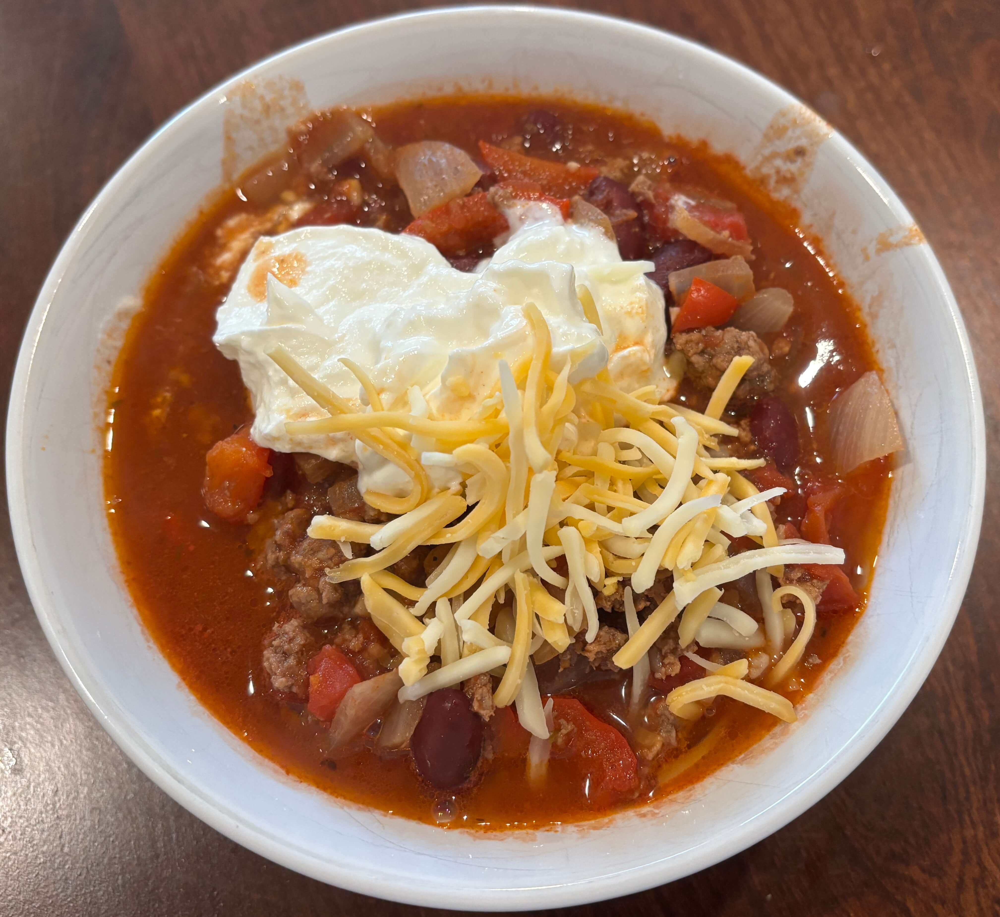

Home
Beef Chili

5-6 servings
Prep: 10 min, Cook: 30 min or Cook: 8 hours
Ingredients
- 1 tbsp olive oil
- 3 garlic cloves, minced
- 1 yellow or white onion, diced
- 1 red bell pepper, diced
- 1 lb ground beef
- 3 tbsp tomato paste
- 800g / 28 oz can crushed tomato
- 14 oz / 420g can red kidney beans, drained (or other beans)
- 16 oz beef broth
- 1 1/2 tsp sugar (any type)
- Serve with sour cream, shredded cheese, rice, cilantro, or tortilla chips
Spice Mix
- 1-2 tsp cayenne pepper (adjust to taste)
- 4 tsp paprika powder
- 5 tsp cumin powder
- 2 tsp garlic powder
- 2 tsp onion powder
- 2 tsp oregano
- 1 1/2 tsp cooking salt / kosher salt
Steps
- Heat oil in a large skillet over medium high heat. Add garlic and onion, cook for 1 minute, then add red pepper and cook for 2 minutes until onion is translucent.
- Turn heat up to high and add beef. Cook, breaking it up as you go, until mostly browned.
- Add Chili Spice Mix. Cook until beef is browned all over. (This step helps release extra flavour from the spices)
- Add remaining ingredients, with 1 cup of beef broth for Quick Cook, 2 cups for Slow Cook, or 1/2 cup for slow cooker. Bring to simmer, then adjust heat per step below:
- Quick Cook - 20 to 40 minutes, uncovered, on medium low heat so it's bubbling gently; OR
- Slow Cook - 1.5 hours to 2 hours, covered, on low heat so it's bubbling very gently. OR
- Slow Cooker - 6 hours on low. Even 8 hours will be fine
- Adjust salt to taste just before serving.
- Serve over rice, or ladle into bowls and serve with corn chips or warm tortillas on the side with Toppings of choice.